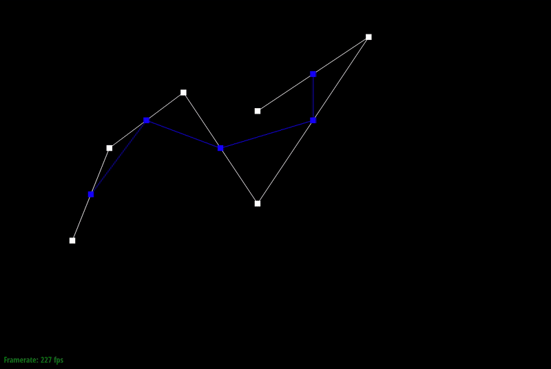
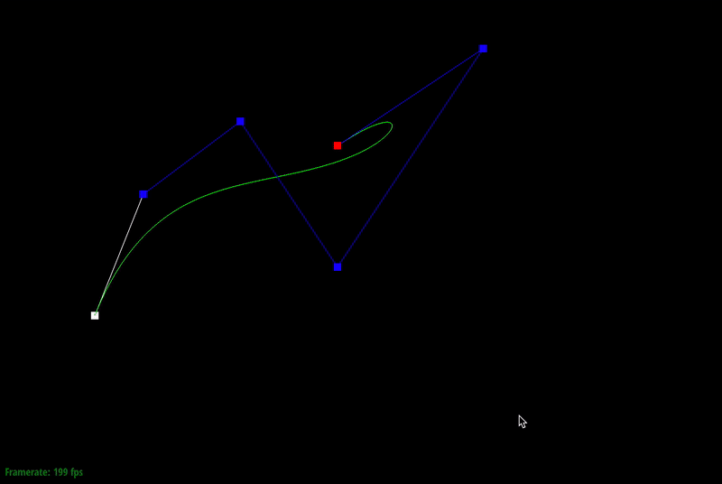

Overview
Moving on from rendering, we now delve in the world of meshes and 3D object representation. We first touch on
Bezier curves and surfaces, which are very simple ways to create complex shapes efficiently. With a few control
points, we can describe a curve parametrically.
Moving to Part 2, we then extend our understanding of Bezier curves and
create a Bezier patch, by introducing another dimension and more control points.
In the next section, we take a look at another commonly used representation of objects in 3D space: triangle meshes.
We learn how to create a smoother appearance by area averaging out normals for vertices.
We then learn how to manipulate our half-edge mesh data structure with edge flipping and edge splitting.
Finally, we combine these 2 techniques to perform Loop subdivision, which is a iterative and simple way to smooth out a given,
rough mesh. The technique is quite cheap and since we can stop upsampling at any time, this technique is very useful in making
realistic models without the pain of actually modelling the geometry ourselves. However, to create edges and sharp corners, one
must also implement more subdivision rules and special edges to do so.
Overall, I enjoyed the project and felt it was easier than Project 1. Perhaps we can get more shapes that subdivide into interesting blobs?
Section I: Bezier Curves and Surfaces
Part 1: Bezier curves with 1D de Casteljau subdivision
In evaluateStep, I calculate 2 values.
- The order of the next Bezier curve as nextIndex.
- The number of points needed as numberOfPoints.
These points are stored in a temporary vector<Vector2D> called nextLevelVector and finally use the push_back function to insert this new layer of control points into evaluatedLevels.
|

|
|

|
Part 2: Bezier surfaces with separable 1D de Casteljau subdivision
In Part 2, de Casteljau's algorithm is used as the first method "Separable 1D de Casteljau".
Given the 4x4 grid of control points of the Bezier patch and the u,v coordinates to calculate, we perform the
following steps to calculate the patch over u,v:
- For each row of points, calculate the Bezier curve for those 4 points at u.
- For these 4 points from each row, calculate the Bezier curve for the parameter v.
This gives us, from 16 control points, 1 point per evaluation. As we evaluate across the u,v space, we get a Bezier patch. With multiple patches, we can render an object.

|
Section II: Sampling
Part 3: Average normals for half-edge meshes
From a high-level perspective, I walked around the halfedges that were connected to the vertex, and
calculated the area-weighted normals of each of the faces belonging to the halfedges using the cross product.
I normalized this summed normal and returned it as the new normal for the current vertex.
More specifically:
- Cached the central point as a Vector3D to be used in calculation of the edge vectors.
- Cached a reference to the starting twin halfedge (the halfedge pointing towards the central vertex.)
- In a while loop, calculate 2 vectors of the edges of the triangles, by using 3 points:
- The cached common point in step 1.
- The further point belonging to the current halfedge pointing towards the central point.
- The further point belonging to the twin of the next halfedge.
- Take half of the cross product of these 2 vectors and add it to the summing vector for the normals.
- Since the cross product's magnitude is twice the area of the triangle that these 2 vectors define, the addition I do in step 4 is already area-weighting each normal.
- Returning the normalized value of the sum gives the area-weighted normal for the current vertex.

|
Part 4: Half-edge flip
The flipEdge function was implemented in these steps:
- I collected every halfedge (10), vertex (4), edge (5) and face (2) reference, with 21 in total including the provided edge.
- I reassigned every element in each halfedge.
- next(), twin(), vertex(), edge(), face()
- I reassigned every vertex's halfedge.
- I reassigned every edge's halfedge.
- I reassigned every face's halfedge. By following the method described in the implementation guide provided, I did not encounter any major bugs.

|
Part 5: Half-edge split
The splitEdge function was implemented in these steps:
- I collected every halfedge (10), vertex (4), edge (5) and face (2) reference, with 21 in total including the provided edge.
- I also created new halfedges (6), vertices (1), edges (3) and faces (2) with 12 in total.
- I reassigned every element in each halfedge.
- next(), twin(), vertex(), edge(), face()
- I reassigned every vertex's halfedge.
- I reassigned every edge's halfedge.
- I reassigned every face's halfedge.
I also drew my own reassignment diagram for reference. No major bugs were found, except when I assigned both f0 and f1 to the same face. That took a while to find.

|

|

|
Part 6: Loop subdivision for mesh upsampling
I carried out Loop subdivision as such:
- Iterating over all vertices, computed all the new positions for the old vertices using the formula given.
- Iterating over all edges, computed all new positions for vertices formed from split edges.
- At the same time, cache all these edges into a vector for the next step.
- Split all edges in the cached vector.
- Assigned isNew = false for 2 edges that made up the original edge.
- Assigned isNew = true for 2 new edges created during spitting
- Transfer the newPosition from the old edge to the newPosition of the new vertex created from splitting.
- Flip edges conneced to 1 old and 1 new point.
- Used a XOR operator for this.
- Finally, copy all newPositions and replace the positions of all vertices with newPositions.

|

|

|

|
"Can you pre-process the cube with flip and split so it subdivides symmetrically? Document these effects and explain why they occur, and how your pre-processing helps alleviate the effects."
In order to make the resulting upsampled cube symmetric, I hypothesised that the degree of the vertices mattered. I flipped the edges of the cube such as at opposite ends, the vertices of the cube both have degree of 6. This also meant that every other vertex degree would be 4.

As a consequence, all other vertex degrees have to be 4. |
Upon upsampling, this created a hexagonal-esque pillow shape. My belief is that the original degrees are always conserved, but the points are moved slightly inward. As such, like for the icosahedron, when upsampling, we see that there are always 12 vertices with a degree of 5 (from the original shape) that are preserved. So, in order to get symmetric shape for the cube, we need the symmetric vertex degrees to be the same as well.

|

degree 4 vertex is still preserved, circled in red. |
Section III: Mesh Competition
If you are not participating in the optional mesh competition, don't worry about this section!